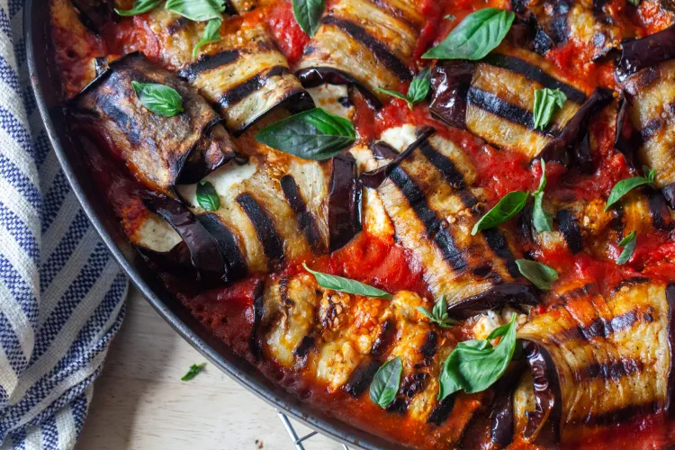

How to make Eggplant Involtini

Description
This tasty take on the classic eggplant parmesan is a great meal any time of year, and gluten-free to boot!
Ingredients
- 2 medium eggplants
- 1 large can of crushed tomatoes
- 1 container of whole milk ricotta cheese
- Lots of fresh basil
- Italian seasoning
- Hot italian peppers
- 1 head of garlic, peeled and separated into cloves
- Parmesan cheese to taste
- Olive oil (lots of it!)
Steps
- Preheat the oven to 400 degrees F.
- Slice the eggplant into 1/4-inch slices.
- Sprinkle the eggplant slices liberally with salt and allow to sit for five minutes.
- This step gets a lot of the bitter water out of the eggplant. You will likely see them "sweating"
- Wipe off the water at the end of the five minutes and proceed.
- While the eggplants are sitting, chop some basil and mix it into the ricotta, along with the Italian spices.
- Fry the eggplant slices in oil a few minutes per side, until they soften a bit and you can roll them. Set them aside until all are done.
- Lay out the eggplant slices and put a dollop of the seasoned ricotta on each one, then roll them into a medium-tight roll.
- If you have too much ricotta, just eat whatever is left :P
- If you don't have enough ricotta, take a little from each one and spread it around to make it work.
- Mix the crushed tomatoes with the hot italian peppers to taste. I like it spicy!
- In a large lined baking sheet, spread the tomato sauce to evenly cover the bottom.
- Place the eggplant rolls evenly throughout the sauce.
- Sprinkle the whole cloves of garlic in any open spaces left in the pan.
- Bake the whole thing for ~20 minutes.
- When they are done baking, enjoy!
- Grate or slice some parmesan on top for extra cheesiness.
- Add some more hot peppers if you need more spice.
- Eat them and be happy :)
Let us know what you think!